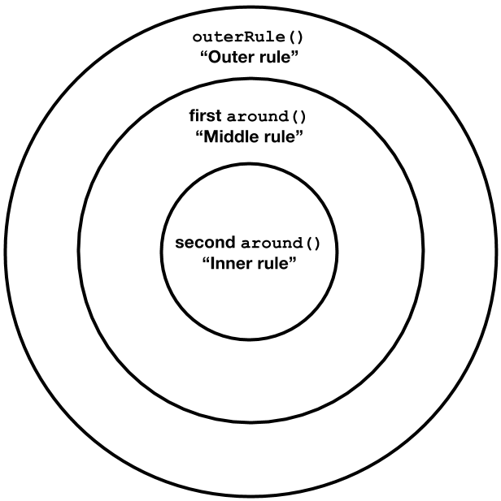
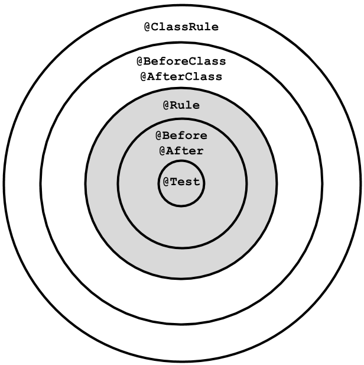

JUnit Rules
An introduction
By Katarina Hallberg
What's your problem?!
(and solution)
- Failing test due to missing cleanup?
- Repeated setup / cleanup code?
- Deep test class hierarchy due to using inheritance to reuse code or configuration?
- Custom JUnit Runners?
JUnit Rules = A solution
Since version 4.7, 2009
- Do things before and after a test is run
- Do things before and after a test class or test suite is run
- Setup and cleanup together
- Reusable
- Combinable
Example
public class SettingsTest {
@Rule
public TemporaryFolder folder = new TemporaryFolder();
@Test
public void setting_can_be_retrieved_by_key() throws IOException {
File properties = folder.newFile("test.properties");
BufferedWriter out =
new BufferedWriter(new FileWriter(properties));
out.write("name = Katarina\n");
out.close();
Settings settings = new Settings();
settings.load(properties);
assertEquals("Katarina", settings.get("name"));
}
}
This is how it works
This is how it works
Test class
public class TestClass {
@Test
public void test_one() {...}
@Test
public void test_two() {...}
@Test
public void test_three() {...}
}
This is how it works
Test wrapped in Statement
This is how it works
Statement
public abstract class Statement {
public abstract void evaluate() throws Throwable;
}
This is how it works
Rule takes and returns Statement

This is how it works
Rule
public interface TestRule {
Statement apply(Statement base, Description description);
}
Use a Rule
- A Rule implements TestRule
- @Rule (public)
- @ClassRule (public static)
Use a Rule
Method
public class SuperTestUsingRules {
@Rule
public LoggingRule loggingRule = new LoggingRule();
@Test
public void test_one() {...}
@Test
public void test_two() {...}
}
Use a Rule
Class
public class SuperTestUsingRules {
@ClassRule
public static LoggingRule loggingRule = new LoggingRule();
@Test
public void test_one() {...}
@Test
public void test_two() {...}
}
Implement a Rule
public class LoggingRule implements TestRule {
@Override
public Statement apply(Statement base, Description description) {
return new Statement() {
@Override
public void evaluate() throws Throwable {
System.out.println("Before executing original Statement");
try {
base.evaluate();
} finally {
System.out.println("After executing original Statement");
}
}
};
}
}
5 Rules provided by JUnit
- Timeout
- TemporaryFolder
- ExpectedException
- ErrorCollector
- TestName
Example: Expected Exception
public class ExpectedExceptionTest {
@Rule
public ExpectedException thrown = ExpectedException.none();
@Test
public void throws_nullpointer_exception() {
thrown.expect(NullPointerException.class);
thrown.expectMessage(endsWith("null pointer"));
throwNullPointerException();
}
private void throwNullPointerException() {
throw new NullPointerException("This is a null pointer");
}
}
3 Rule base classes provided by JUnit
- ExternalResource (TemporaryFolder)
- Verifier (ErrorCollector)
- TestWatcher (TestName)
Example: External Resource
Extending TestRule
public class LoggingRule implements TestRule {
@Override
public Statement apply(Statement base, Description description) {
return new Statement() {
@Override
public void evaluate() throws Throwable {
System.out.println("Before executing original Statement");
try {
base.evaluate();
} finally {
System.out.println("After executing original Statement");
}
}
};
}
}
Example External Resource
Extending ExternalResource
public class LoggingRule extends ExternalResource {
@Override
protected void before() throws Throwable {
System.out.println("Before executing original Statement");
}
@Override
protected void after() {
System.out.println("After executing original Statement");
}
}
Chain Rules
(Demo)
Chain Rules
Rules + annotations = true
Summary
- Setup and cleanup together
- Reusable (without inheritance)
- Combinable
- Use existing or write your own!